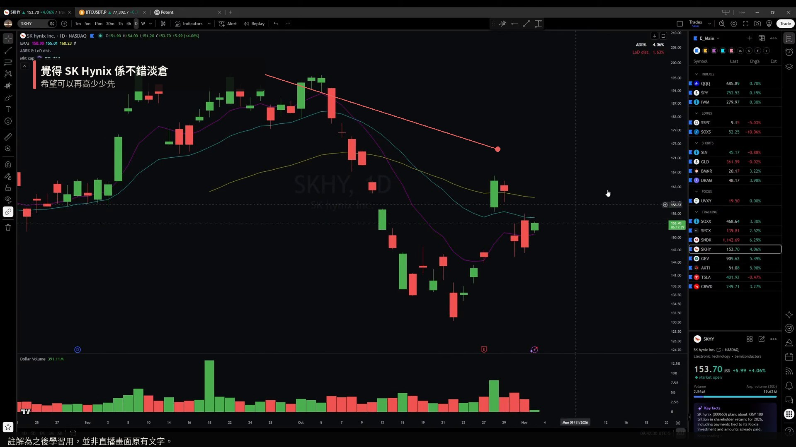
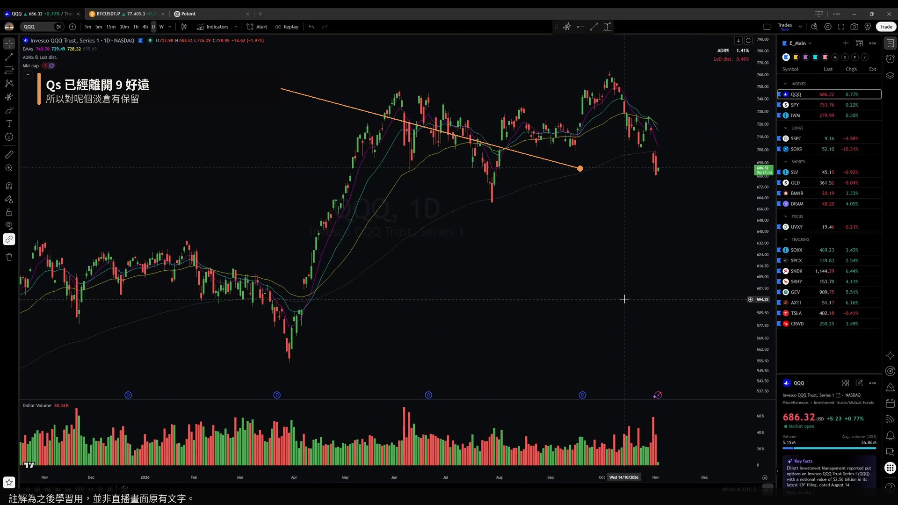
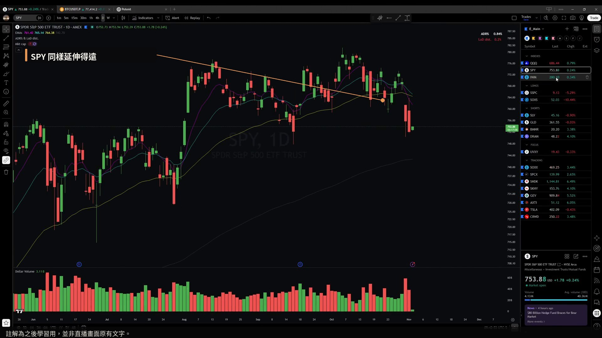
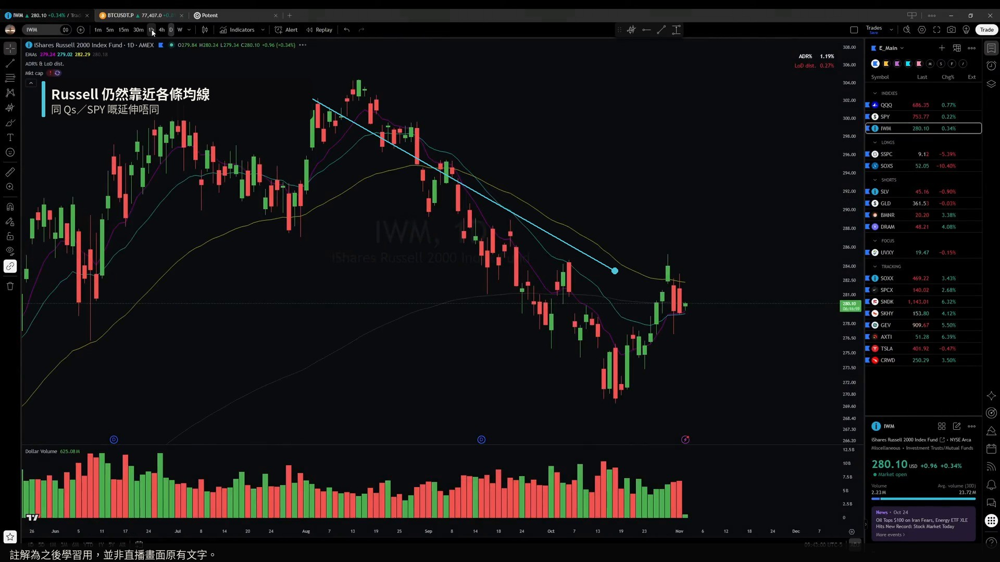
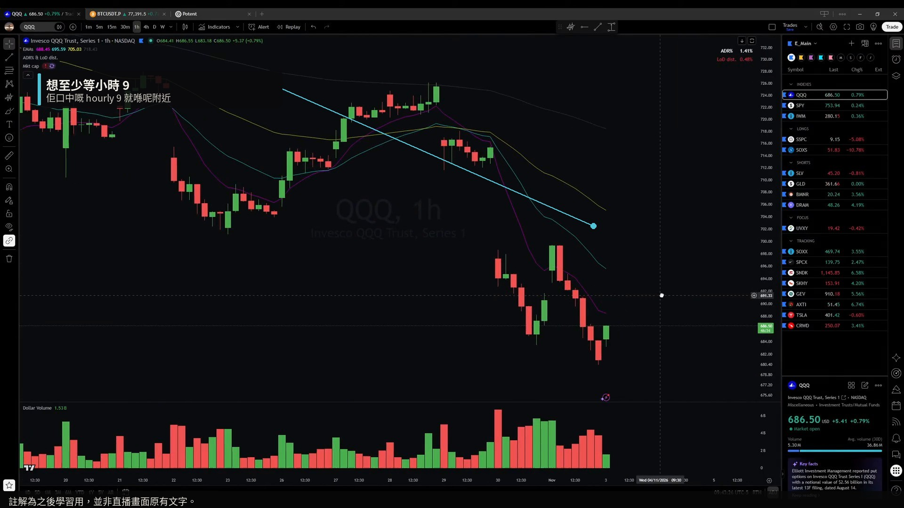
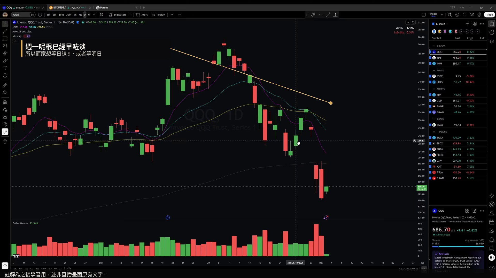
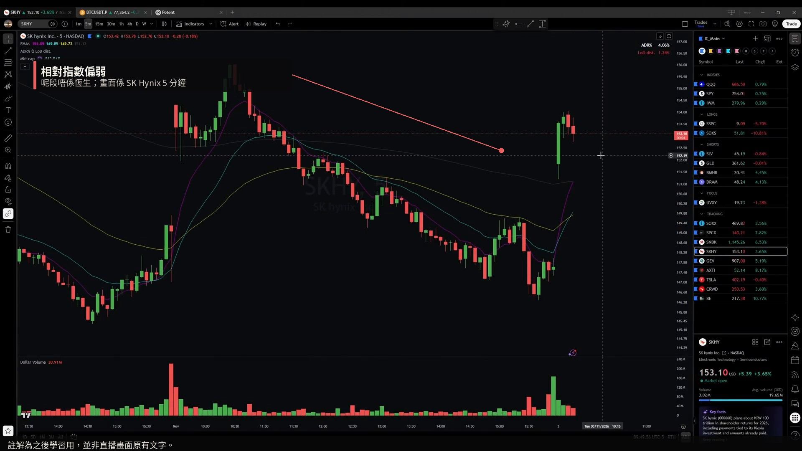
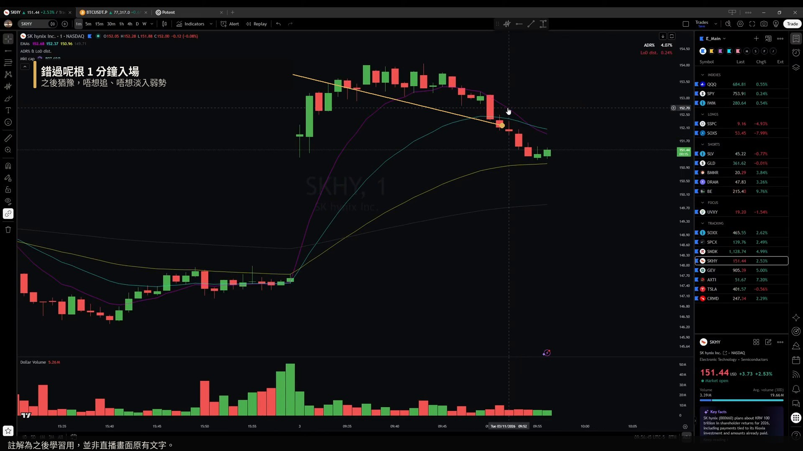
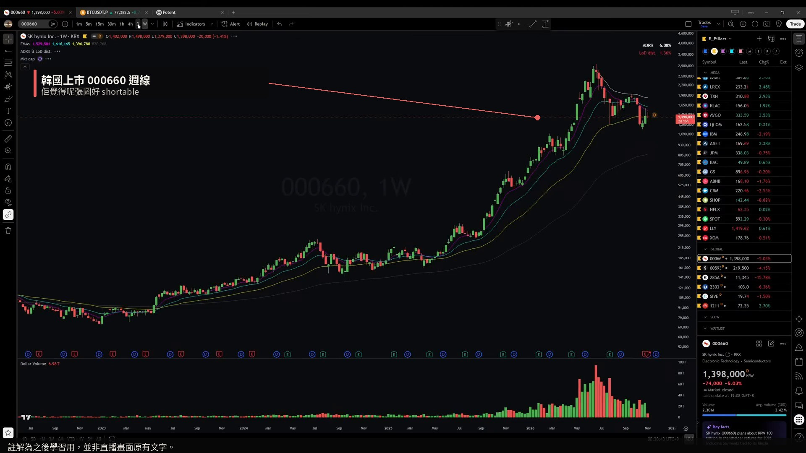
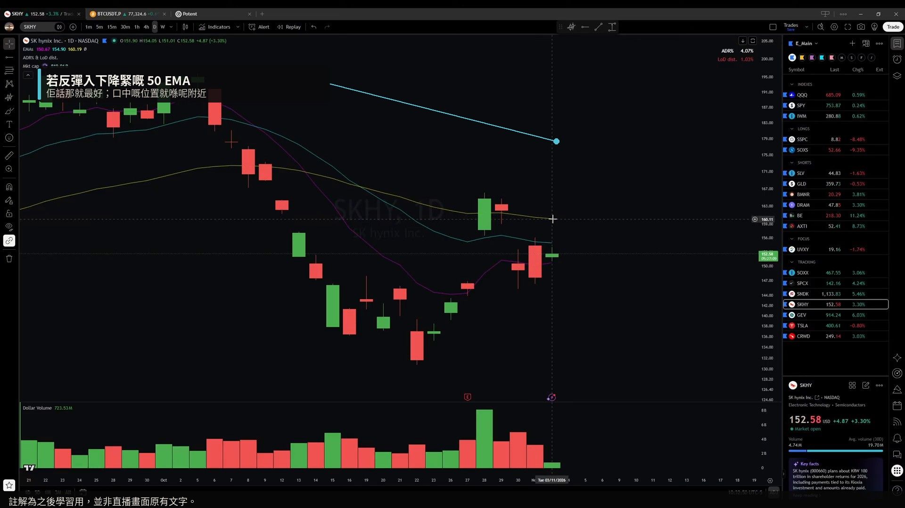

概要
覺得 SK Hynix 可以淡，但指數延伸令佢有保留
20:30 開始，佢覺得 SK Hynix 係不錯淡倉，但希望可以再高少少。保留來自指數：Qs 已經離開 9 好遠，SPY 同樣延伸得遠，只有 Russell 仍然靠近各條均線。所以想至少等 Qs 嘅小時 9，或者等明日、等日線 9；亦承認週一已經喺呢根日線早咗淡。
之後喺 28:06 話 SK Hynix 相對指數偏弱；34:43 前後檢討錯過 1 分鐘入場，唔想追、唔想淡入弱勢。1:08:44 出示韓國上市 000660 週線，話呢張圖好 shortable；若可以反彈入下降緊嘅 50 EMA 就最好，亦話自己可能有少少 FOMO。期間提到極緊止蝕同風險百分比，本頁只保留原話，畫面核對唔到倉位或損益，唔當可複製嘅倉位規則。
圖一 · 主圖
SK Hynix 日線：覺得係不錯淡倉
直播 20:40

原話
I think SK Hynix is a pretty decent short in my opinion, but hopefully it can go a little bit higher.
我覺得 SK Hynix 以我睇係一個幾不錯嘅淡倉，但希望佢可以再高少少。
點樣讀
日線見到價格已由高位回落。佢把呢隻讀成可以淡，但第一句已經加上保留：想再高少少，而唔係追而家呢下。
圖二
QQQ 日線：已經離開 9 好遠
直播 20:55

原話
But I'm a little bit unsure about this one, because the Qs is so extended from the 9.
但對呢一個我有少少唔肯定，因為 Qs 已經離開 9 好遠。
點樣讀
QQQ 日線見到價格遠離均線一帶。佢用「extended from the 9」解釋點解對 SK Hynix 呢個淡倉仲有保留。圖例冇印周期，只標口中嘅 9 就喺呢附近。
圖三
SPY 日線：同樣延伸得遠
直播 21:03

原話
SPY is also pretty extended.
SPY 同樣延伸得幾遠。
點樣讀
SPY 日線同 QQQ 相似，價格遠離均線。呢幅圖用來對照：大指數已經延伸，唔係額外一個獨立入場理由。
圖四
IWM 日線：仍然靠近各條均線
直播 21:10

原話
It's just the Russell is still near all the EMAs.
只係 Russell 仍然靠近所有均線。
點樣讀
IWM 日線見到價格仍然貼近一組均線，同剛才 Qs／SPY 已經離開 9 嘅情況唔同。佢用呢個對比去解釋點解而家對淡倉仲猶豫。
圖五
QQQ 1 小時：想至少等小時 9
直播 21:36

原話
I think I will at least wait for the hourly 9 on the Qs, or maybe just wait for tomorrow, or the daily 9 EMA.
我想至少等 Qs 嘅小時 9，又或者就等明日，又或者等日線 9 EMA。
點樣讀
1 小時圖把「等 hourly 9」放喺具體位置上。圖例冇印周期，本頁只標口中嘅小時 9 就喺呢附近。呢句亦同時保留「等明日」同「等日線 9」兩個選擇。
圖六
QQQ 日線：週一呢根已經早咗淡
直播 22:00

原話
…or the daily 9 EMA, that I made a mistake to like shorting too early on Monday on this candle.
……或者等日線 9 EMA。我週一喺呢根已經犯咗錯，淡得太早。
點樣讀
佢指住日線某一根，承認週一淡得太早。呢幅圖要學嘅係「等更好位置」同「承認早咗」呢個檢討，唔好寫成而家已經再入咗場。
圖七
SK Hynix 5 分鐘：相對指數偏弱
直播 28:06

原話
So far SK Hynix is showing some relative weakness to the indices. I am not sure.
到而家 SK Hynix 相對指數表現出一啲相對弱勢。我唔肯定。
點樣讀
5 分鐘圖用來對照相對弱勢，而唔係另外一個已經決定咗嘅入場。句末仍然有 I am not sure。呢段對白同畫面都係 SK Hynix，唔係恆生指數。
圖八
SK Hynix 1 分鐘：錯過入場，唔想追弱勢
直播 34:55

原話
Especially if Russell is not really that extended. SK Hynix missed the entry on this one-minute candle, and then I hesitated a little bit, and I really don't want to chase. I really don't want to short into the weakness. So let's see whether we can get some bounce, but maybe not. Actually maybe today may not be the best day for the shorts.
尤其如果 Russell 並未延伸得咁遠。SK Hynix 呢根 1 分鐘我錯過咗入場，之後猶豫咗一陣，我真係唔想追，亦真係唔想淡入弱勢。睇下可唔可以有反彈，但可能唔會。其實今日可能都唔係做淡最好嘅日子。
點樣讀
1 分鐘圖見到佢指住已經走過嘅那根。重點係「錯過就唔追」同「唔想淡入弱勢」，同稍後「今日未必係最好淡倉日」一致，唔好把呢幅圖讀成叫人追空。
圖九
韓國上市 000660 週線：覺得好 shortable
直播 1:08:53

原話
I really like this South Korea chart on SK Hynix. It just looks so shortable.
我好鍾意呢張 SK Hynix 嘅韓國圖。睇落真係好 shortable。
點樣讀
畫面代碼係 000660，週線，交易所顯示 KRX，標題為 SK hynix Inc。呢幅週線同稍後嘅美股 SKHY 日線係同一家公司嘅唔同上市圖，唔好同恆生指數混淆。
圖十
SKHY 日線：若反彈入下降 50 EMA 就最好
直播 1:11:00

原話
I'm using an extremely tight stop now on the two trades that I've talked. I think it's less than 0.1% risk per trade, maybe even I think it's like 0.02% risk per trade, so I'm only losing like 0.05% for the two losses, to potentially catch the fade. So yeah, I'm kind of aware of it, like today may not be the best day for the shorts, but I still kind of like this one. If SK Hynix can rally into this declining 50 EMA, that would be the best. I'm just maybe getting a little bit FOMO on this one.
而家我喺講過嘅兩筆交易用咗非常緊嘅止蝕。我諗每筆風險少過 0.1%，甚至可能大約 0.02%，所以兩筆虧損加埋可能只係大約 0.05%，為咗有機會捉到呢次 fade。我知今日可能唔係做淡最好嘅日子，但我仍然有啲鍾意呢一個。如果 SK Hynix 可以反彈入呢條下降緊嘅 50 EMA，那就最好。我可能喺呢個上面有少少 FOMO。
點樣讀
日線見到下降中嘅均線仍在價格上方。佢把「反彈入下降 50 EMA」講成最好情況，同時承認今日未必係最好淡倉日，同自己可能有 FOMO。
風險百分比只係原話，畫面核對唔到倉位或損益，唔好當成可複製嘅倉位規則，亦唔寫死成交。圖例冇印 50，只標口中位置就喺呢附近。
附註
注意事項
- 呢科由 20:30 開始，之後喺 28:06、34:43 同 1:08:44 再回到同一隻股票，所以收埋同一科，唔分開四個科目。
- Whisper 有多處聽錯：short 聽成 shot、Qs 聽成 kills、Hynix 聽成 Hynes 或 sq hannes、fade 聽成 fate、FOMO 聽成 formal。本頁按畫面同語境更正，並喺原話註明。
- 曾經有轉寫令人以為講緊恆生；對白同畫面都係 SK Hynix 相對指數偏弱，同韓國上市 000660 週線。
- 0.1%、0.02%、0.05% 只係原話。畫面睇唔到倉位或損益，本頁唔核實呢啲數字，亦唔當倉位規則。
- 圖例多數只有顏色同數值，冇印均線周期。本頁唔會把某條彩線寫死成 9 或者 50。
- 畫面睇唔到成交價、倉位大細或者損益，所以唔寫死呢啲數字。